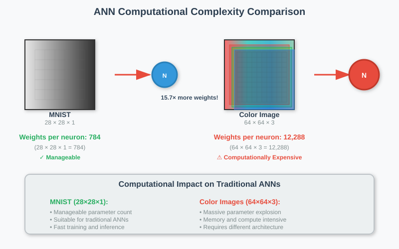
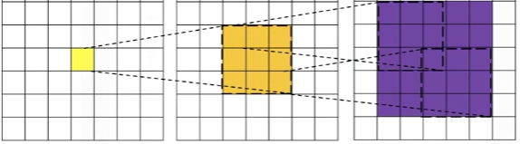
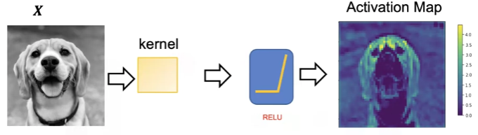
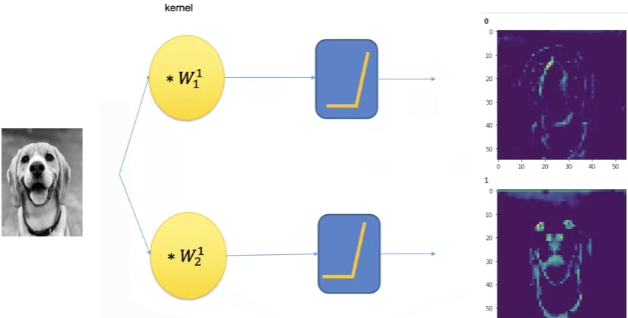
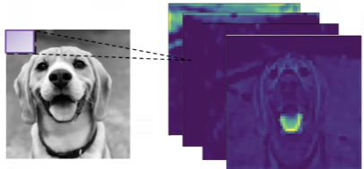

Why convolutions changed how machines see
Introduction
As I mentioned in the previous plate, when we need to process image data, Convolutional Neural Networks (CNNs) are a better choice than standard Multi-Layer Perceptrons. But better how? And in what way?

CNNs and ANNs
ANNs
One thing I didn't touch on last post: why I used "MLP" then and "ANN" now. MLP is a specific type of ANN, which is a more general term.
ANN is the broad term for any model inspired by the structure and function of biological neural networks. MLP is a specific kind of ANN: a feedforward network with one or more hidden layers and fully connected neurons. So all MLPs are ANNs, but not all ANNs are MLPs.
With that out of the way — one of the largest limitations of traditional ANNs is that they struggle with the computational complexity required to process image data. Benchmarks like MNIST handwritten digits are workable for most ANNs thanks to the small image dimensionality (28×28). A single neuron in the first hidden layer would carry 784 weights (28×28×1, since MNIST is normalised to black and white), which is manageable.

If you consider a more substantial coloured image input of 64×64, the number of weights on just a single neuron in the first layer balloons to 12,288. Also factor in that to deal with this scale of input, the whole network needs to be a lot larger than one for colour-normalised MNIST — and the drawbacks come into focus.
But why does it matter? Surely we could just increase the number of hidden layers, and perhaps the number of neurons within them?
Well — yes, but no. Two reasons:
- Not everyone has unlimited computational power and time to train huge ANNs.
- Even if you did, the more complex the model, the more likely it is to overfit.
Overfitting is a critical concern in just about any machine-learning algorithm. When models become too complex, they memorise training data rather than learning generalisable patterns. Reducing ANN complexity decreases the number of parameters, which both lowers the risk of overfitting and improves the model's ability to make accurate predictions on new data.
CNNs
So how do CNNs solve this problem, and how are they better?
CNNs are a type of deep learning model specifically designed to process structured grid data — like images. They are particularly effective for image classification tasks because they're set up to suit the structure of image data.
Historical context
CNNs were inspired by the visual cortex of animals, where individual neurons respond to stimuli only in a restricted region of the visual field (a receptive field). LeNet-5, developed by Yann LeCun in the 1990s, was one of the first successful applications of CNNs for digit recognition.
The CNN revolution truly began with AlexNet in 2012, which won the ImageNet competition by a significant margin and demonstrated the power of deep convolutional architectures.
Since then, CNNs have become the backbone of many computer-vision tasks, leading to breakthroughs in image classification, object detection, and segmentation.
Some important CNN architectures: AlexNet, VGGNet, GoogLeNet, ResNet, EfficientNet. Each introduced innovations that improved performance and efficiency.
CNN layers consist of neurons arranged in three dimensions: height, width, and depth (the number of feature maps, not layers). Unlike standard ANNs, each neuron connects only to a small region of the previous layer. An input of size 64×64×3 is gradually reduced to an output of 1×1×n, where n is the number of classes.
CNNs use three types of layers: convolutional, pooling, and fully connected. Combined, they form a simple CNN architecture that can learn complex patterns in image data.
To make this concrete, let's start with an example architecture.
The architecture

In this architecture we have two conv-pool blocks, flattening, dropout regularisation, and two fully-connected layers ending in a 10-class output. The input is a 28×28×1 image; the output is a single value representing the class.
| Layer | Type | Details | Output Shape |
|---|---|---|---|
| 0 | Input | Greyscale image, 28×28 pixels | (1, 28, 28) |
| 1 | Conv2d | in_channels=1, out_channels=32, kernel=3, stride=1, padding=1 | (32, 28, 28) |
| 2 | ReLU | Activation | (32, 28, 28) |
| 3 | MaxPool2d | kernel=2, stride=2 | (32, 14, 14) |
| 4 | Conv2d | in_channels=32, out_channels=64, kernel=3, stride=1, padding=1 | (64, 14, 14) |
| 5 | ReLU | Activation | (64, 14, 14) |
| 6 | MaxPool2d | kernel=2, stride=2 | (64, 7, 7) |
| 7 | Flatten | start_dim=1 | (3136,) |
| 8 | Dropout | p=0.25 | (3136,) |
| 9 | Linear | in_features=3136, out_features=128 | (128,) |
| 10 | Linear | in_features=128, out_features=10 | (10,) |
Input
As in other ANNs, the input layer is the raw pixel values. For MNIST, the 28×28×1 pixels — 1 channel of greyscale values (height 28, width 28), each running from 0 to 255.
Convolutional layer
Imagine a photographer taking a photo of the same scene with different camera filters: one highlights red tones, one boosts contrast, one finds edges. Each resulting image is different — but all based on the same original photo. That's what convolutional filters are doing — looking for different patterns in the same input.
A convolutional layer applies a set of learnable filters (or kernels) to an input image (or feature map). These filters slide across the input spatially and compute a dot product between the filter weights and the input values in that region.
Think of a convolutional layer like using a small see-through film (the filter) to press across a sheet of paper (the image). At each position, the film checks how well the pattern it carries matches that part of the paper — giving a score (the dot product). It slides over the paper, left to right, top to bottom, building a new image that highlights where the pattern fits well.
Each neuron in the output feature map is connected only to a small part (local region) of the input — e.g. a 3×3 patch [1]. That neuron computes a dot product between the filter weights (its parameters) and the input patch. This result becomes one value in the output feature map.
This is also how the receptive field comes to be.
What is a receptive field?
Since each neuron only connects to a small patch (like 3×3), that patch defines its receptive field. The receptive field is the region of the input image that influences a single neuron's output.
Each neuron only "sees" a small patch of the input, not the entire image. But as you go deeper, layers have larger receptive fields due to stacking operations.

So a 3×3 conv filter has a 3×3 receptive field, detecting simple features (edges, textures) in small regions. But after pooling and more conv layers, neurons might effectively see 7×7, 15×15, or larger regions — detecting complex patterns (shapes, objects) across larger areas.
The biological inspiration comes from how neurons in the visual cortex respond only to stimuli in specific regions of the visual field. This local connectivity is what makes CNNs parameter-efficient compared to fully-connected layers that would connect every input pixel to every neuron.
In our architecture, the first convolutional layer has 32 filters, each of size 3×3. Each filter produces a 26×26 feature map (28 − 3 + 1 = 26) after sliding across the input. The output of this layer would be a 26×26×32 tensor, where 32 is the number of filters.
Wait.
Then how come the output shape is (32, 28, 28) instead of (32, 26, 26)?
It's because we use padding. Padding controls the spatial dimensions (height and width) of the output after a convolution. The formula:
\[ \text{Output Size} = \frac{\text{Input Size} + 2 \times \text{Padding} - \text{Kernel Size}}{\text{Stride}} + 1 \]
In our case: input 28, kernel 3, stride 1, padding 1.
\[ \text{Output Size} = \frac{28 + 2 \times 1 - 3}{1} + 1 = \frac{27}{1} + 1 = 28 \]
If padding = 0, the formula gives 26 — no padding shrinks the spatial size. Padding of 1 is used to preserve size.
Padding can be crucial: it lets us control the output size of feature maps, which can matter for maintaining spatial dimensions throughout the network.
- No padding — input shrinks each time, and quickly becomes too small.
- With padding — output can have the same spatial size, enabling deeper networks and better edge detection near borders.
Activation function
After the convolutional layer we apply an activation function, typically ReLU (Rectified Linear Unit). ReLU replaces all negative values in the feature map with zero, introducing non-linearity so the network can learn complex relationships in the data.
There are other activations — Leaky ReLU, Tanh, Sigmoid — but ReLU remains the default unless there's a specific reason to use another.



Pooling layer
The pooling layer's job is to reduce the spatial dimensions of feature maps — reducing (or further reducing, if padding isn't used) the number of parameters in that activation.
Like the convolutional layer, pooling slides across the input feature map — usually in a 2×2 window. Unlike convolutional layers, pooling layers have no weights or learnable parameters. They apply a fixed operation, such as max pooling or mean pooling.
The formula is similar to the convolutional layer's. Pooling usually uses padding = 0 and stride = kernel size (no overlap). So for a 2×2 pooling layer on a 28×28 input:
\[ \text{Output Size} = \frac{28 + 2 \times 0 - 2}{2} + 1 = \frac{26}{2} + 1 = 14 \]
Why are pooling operations fixed (non-learnable)?
The purpose of pooling is purely dimensional reduction, not feature learning. The convolutional layers handle feature learning through trainable weights and filters. Pooling's job is just to downsample while preserving the important information — a task that simple fixed operations handle effectively.
Fixed operations (max, average) are sufficient for reducing dimensions while retaining important features. It helps reduce parameters and increase the receptive field while preserving the most important features.
In our architecture, the first pooling layer reduces the 28×28 feature map to 14×14 by taking the maximum value in each 2×2 region. The second pooling layer further reduces 14×14 to 7×7 and the network depth grows to 64 channels, resulting in a 64×7×7 tensor.
The commonly observed method is max pooling with stride 2 and a 2×2 kernel. Overlapping pooling can also be used (3×3 kernel, stride 2). Because of pooling's destructive nature, a kernel size above 3 will usually hurt performance.
Flattening
Flattening converts the multi-dimensional tensor into a 1D array. Without flattening we can't connect the convolutional features to the fully-connected layers.
Convolutional layers output 3D tensors (height × width × channels), but dense/linear layers expect 1D input vectors. Flatten reshapes the data without losing information — turning the current 7×7×64 tensor into a 3136-element vector that feeds into the classifier.
Dropout regularisation
Dropout is a regularisation technique used to prevent overfitting. It randomly sets a fraction of input units to zero during training — effectively "dropping out" some neurons — forcing the network to learn more robust features that don't rely on any single neuron.
In our architecture, we apply dropout with probability 0.25 after flattening. During training, 25% of the neurons in the flattened layer are randomly zeroed, preventing overfitting. The output shape stays the same, but the model learns to rely on different subsets of features each pass.
Where should I place the dropout layers?
There have been many debates about where to place dropout layers (a prominent one). A few general rules:
- Place dropout after feature extraction, before or between fully-connected layers. Conv layers learn spatial features; dropout there can disrupt that structure. Fully-connected layers are dense and prone to overfitting, so dropout is more effective here.
- Avoid dropout after the final output layer — you want stable outputs there.
- Dropout before BatchNorm = no. BatchNorm neutralises dropout's stochastic effect. If both are used, apply dropout after batch norm + activation.
- Use dropout sparingly. Too much can hurt performance. Higher dropout in deeper/larger models, lower in smaller ones. Typical values 0.2 to 0.5, depending on model size and dataset.
In our case, we place dropout after flattening, before the first fully-connected layer. It prevents overfitting on the flattened feature vector before the network learns high-level combinations in FC1 — essentially regularising the transition from convolutional features to dense classification layers.
Dropout after FC1 would prevent overfitting on the high-level learned features before final classification. Placing it before the output layer (FC2) would interfere with the final probability computation — it targets the most prone-to-overfitting layer without disrupting core functionality.
You can experiment — dropout before FC1, dropout after FC1, or both — and see which yields the best results for your task. For this architecture, one dropout after flattening is sufficient.
Fully-connected layers
The fully-connected layers work just like those in standard ANNs — taking the extracted features and transforming them into class-probability scores. Adding ReLU activations between these layers is often recommended.
In our architecture, we have two fully-connected layers:
- FC1 takes the flattened output (3136 features) and transforms it into 128.
- FC2 takes the 128 features and outputs a 10-dimensional vector representing the class probabilities (0–9 for MNIST).
Through this progressive transformation, CNNs convert the original input image into representations. They apply convolutional operations and downsampling across multiple layers, ultimately producing class-probability scores for classification tasks.
You can find the code for this architecture in the GitHub repository.
Conclusion
We've got a glimpse of how CNNs work and how they're better than standard ANNs for image data. With only around 421K parameters — just 7% of the total of an equivalent MLP — this architecture can hit ~99% accuracy on MNIST.
CNNs excel at preserving spatial relationships between pixels and detecting patterns regardless of where they appear in the image.
But so far we've only worked with a simple benchmark like MNIST. The next plate takes us to more complex datasets — CIFAR-10 and ImageNet — and the architectures we need to capture their patterns.
References
- O'Shea, K., & Nash, R. (2015). An Introduction to Convolutional Neural Networks. arXiv:1511.08458. arxiv.org/pdf/1511.08458
Update 1. As a more detailed explanation: training ANNs on image input can result in a huge number of parameters, due to ANNs' fully-connected nature. To mitigate this, CNNs use local connectivity — each neuron only connects to a small region of the input.